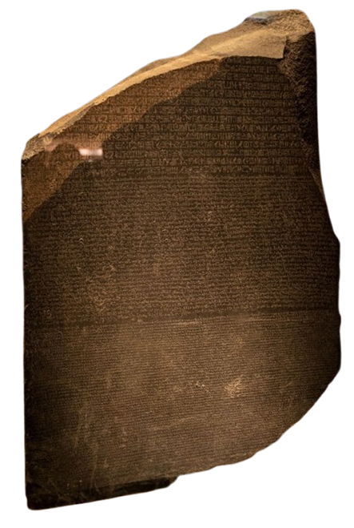
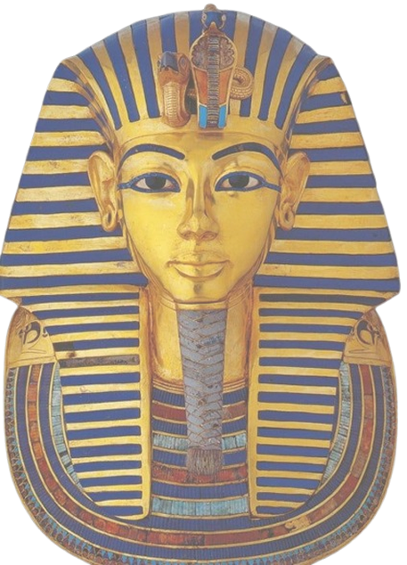
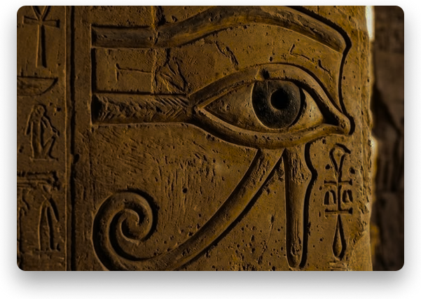
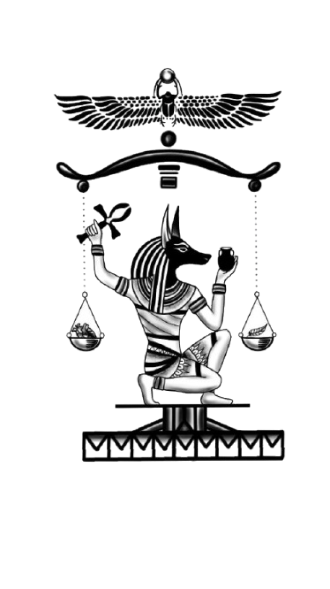

FORMAS DE ESCRITA
Você sabia que não existia apenas o hieróglifo no Antigo Egito?
Haviam três formas de escrita:
-

Hieróglifos: A mais conhecida, mais formal, com desenhos detalhados, usada para monumentos, templos e para cunho religioso.
-

Hierática: Uma versão um pouco simplificada, mas que ainda era usada para coisas formais, como documentos.
-

Demótica: A escrita usada pelo povo, onde era mais prática, com mais abreviações, usada para registros do dia a dia e etc.
A PEDRA DA ROSETA
Você já ouviu falar da pedra da Roseta?
Ela é uma das descobertas mais importantes da história, contendo nela, um texto em hieróglifos, traduzido para o demótico e para o Grego. Sem ela, os historiadores provavelmente não teriam conseguido decifrar os hieróglifos, pois foi a tradução do grego que permitiu que a descoberta fosse feita.

Pode ser vista pessoalmente no Museu Britânico, veja mais na nossa página de recomendações:
Ir para a página
O poder mágico dos hieróglifos

Além dessa escrita ser extremamente complexa e cheia de mistérios, as pessoas do Egito acreditavam que os hieróglifos tinham poder mágico, onde escrever nomes, gravar pessoas, animais e orações dariam forças mágicas para aquilo que era gravado. Tanto que muitos faraós mandaram apagar nomes gravados de outros poderosos, porque se acreditava que traria azar para aquele apagado, e não permitiria que aquela alma pudesse ter uma plena vida após a morte.
-

A direção de leitura:
Nas escritas e textos, as frases podem ser escritas de cima pra baixo, de baixo pra cima, da esquerda para a direita, e por aí vai, agora, como se sabia onde se deveria começar a ler o texto? Uma das formas é reparar para onde os animais e as pessoas estão olhando no texto, esses desenhos sempre olham para o começo das frases.
-

As mensagens escondidas nas gravuras:
Nos desenhos hieróglifos, se pode reparar que muitos deles parecem ‘sem sentido’, ou com desenhos surrealistas: humanos maiores do que outros, criaturas e objetos estranhos, etc. Mas tudo isso tem um porquê, afinal as escritas eram usadas para transmitir ideologias: quanto maior era a pessoa, mais poder e relevância se tinha, se era simbolizada como uma criatura estranha e horrenda, poderia ser uma entidade considerada maligna para o povo, e isso com todas as escritas da época.
-
A balança
Na mitologia egípcia, o coração do falecido era pesado contra a pena de Maat, deusa da verdade, justiça e equilíbrio.
-

-
da moralidade
Se o coração fosse tão leve quanto a pena, a pessoa era considerada justa e podia seguir para a vida eterna. Se fosse mais pesado pelos pecados e más ações, era devorado por Ammit, e a alma deixava de existir.Se o coração fosse tão leve quanto a pena, a pessoa era considerada justa e podia seguir para a vida eterna. Se fosse mais pesado pelos pecados e más ações, era devorado por Ammit, e a alma deixava de existir.
Agora chegou a sua vez de testar a balança! que tal dar uma olhadinha no nosso jogo.
Ir para o jogo